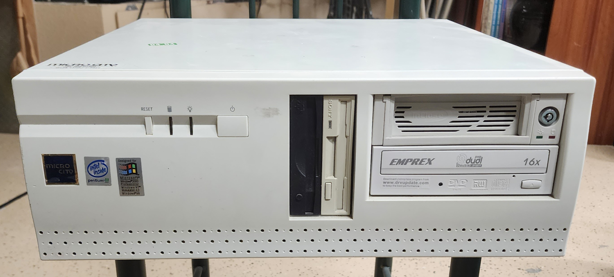
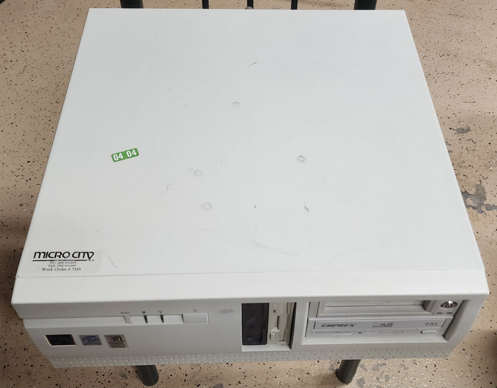
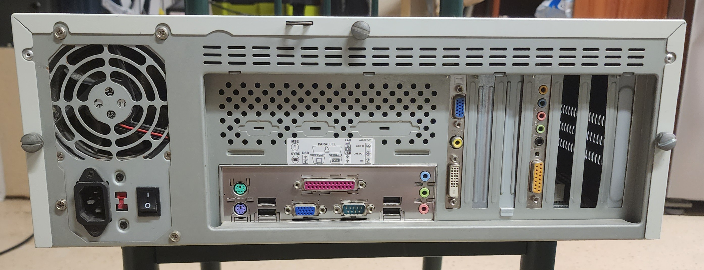
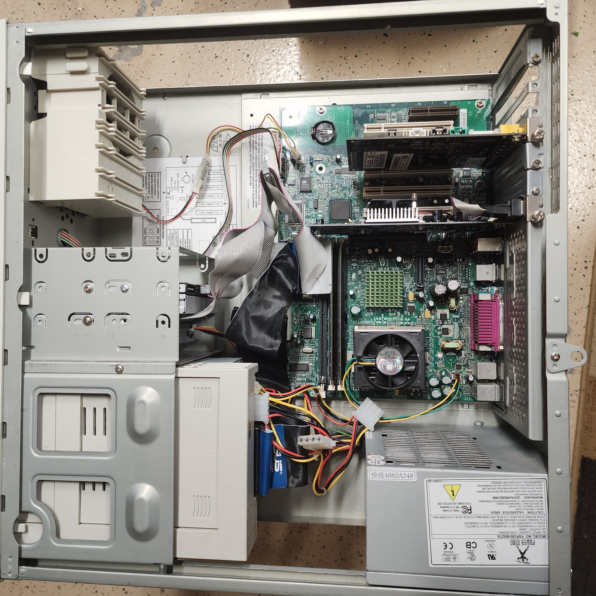
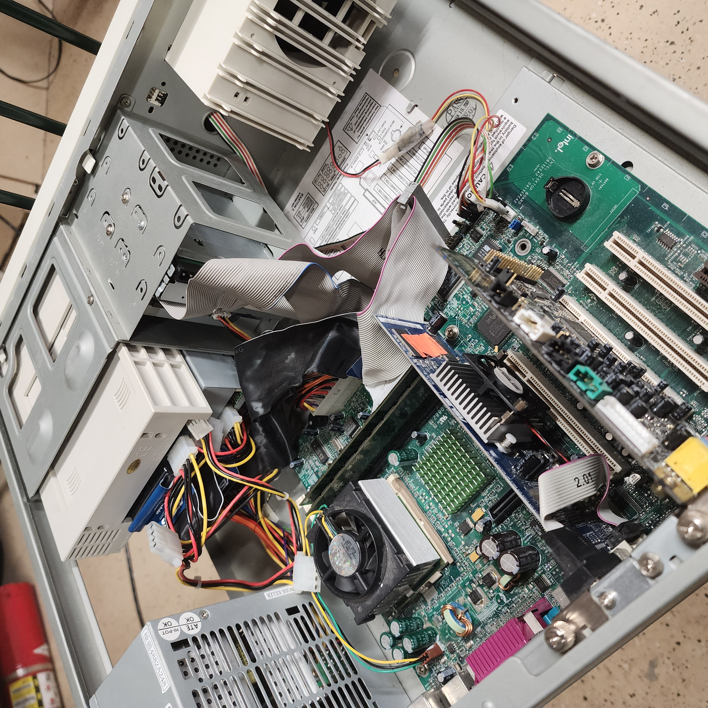

Pentium 3 Desktop
CPU: Pentium 3, 733mhz, socket 370
RAM: PC-133, 192mb (3x64)
HD: 500GB IDE
GPU: Ge Force MX 4000 (128mb)
OS: Windows 98 SE (Plus)
I bought this machine around 2020 for $25 at a computer reseller. It was my first "real"
obsolete gaming rig, a computer that truly felt complete. Everything I had before was from the early 2000s,
running Win XP. This machine was different.
This computer has gone through a plethora of changes, when I first got it, it was equipped with one floppy drive, and a 52x cd rom. It had 1 stick of 64mb ram and the Ge Force MX.
It also had a ton of strange networking cards, a wireless card, and 2 modem cards. Over time it was upgraded with a removable hdd caddy (with a crazy fast 500gb hard drive), a different cd-rom, and a zip drive.
The shitty Intel Motherboard had some leaking caps that were quickly replaced, I also added a fan to the GPU, although it sometimes refuses to start. Overall this machine has been a breeze to work on and remains a powerful and modular workhorse to this day.




